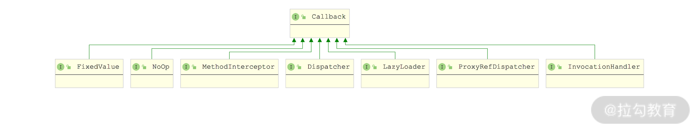
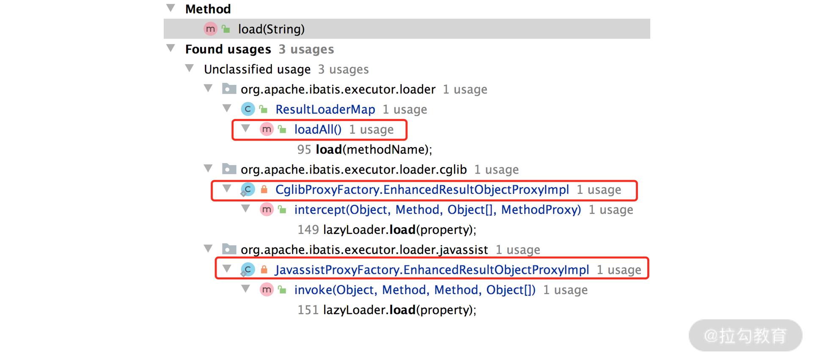
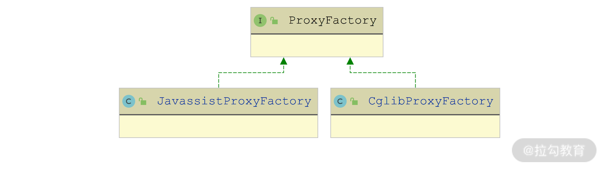

- 00 开篇词 领略 MyBatis 设计思维，突破持久化技术瓶颈.md.html
- 01 常见持久层框架赏析，到底是什么让你选择 MyBatis？.md.html
- 02 订单系统持久层示例分析，20 分钟带你快速上手 MyBatis.md.html
- 03 MyBatis 源码环境搭建及整体架构解析.md.html
- 04 MyBatis 反射工具箱：带你领略不一样的反射设计思路.md.html
- 05 数据库类型体系与 Java 类型体系之间的“爱恨情仇”.md.html
- 06 日志框架千千万，MyBatis 都能兼容的秘密是什么？.md.html
- 07 深入数据源和事务，把握持久化框架的两个关键命脉.md.html
- 08 Mapper 文件与 Java 接口的优雅映射之道.md.html
- 09 基于 MyBatis 缓存分析装饰器模式的最佳实践.md.html
- 10 鸟瞰 MyBatis 初始化，把握 MyBatis 启动流程脉络（上）.md.html
- 11 鸟瞰 MyBatis 初始化，把握 MyBatis 启动流程脉络（下）.md.html
- 12 深入分析动态 SQL 语句解析全流程（上）.md.html
- 13 深入分析动态 SQL 语句解析全流程（下）.md.html
- 14 探究 MyBatis 结果集映射机制背后的秘密（上）.md.html
- 15 探究 MyBatis 结果集映射机制背后的秘密（下）.md.html
- 16 StatementHandler：参数绑定、SQL 执行和结果映射的奠基者.md.html
- 17 Executor 才是执行 SQL 语句的幕后推手（上）.md.html
- 18 Executor 才是执行 SQL 语句的幕后推手（下）.md.html
- 19 深入 MyBatis 内核与业务逻辑的桥梁——接口层.md.html
- 20 插件体系让 MyBatis 世界更加精彩.md.html
- 21 深挖 MyBatis 与 Spring 集成底层原理.md.html
- 22 基于 MyBatis 的衍生框架一览.md.html
- 23 结束语 会使用只能默默“搬砖”，懂原理才能快速晋升.md.html
15 探究 MyBatis 结果集映射机制背后的秘密（下）
在上一讲中，我们介绍了 MyBatis 中结果集映射的核心逻辑位于 DefaultResultSetHandler 之中，然后深入分析了 DefaultResultSetHandler 与简单结果集映射相关的核心实现，这是 MyBatis 整个结果集映射功能的基本。
今天我们就紧接着上一讲，继续介绍 DefaultResultSetHandler 中关于嵌套映射、延迟加载以及多结果集处理的内容。
嵌套映射
处理简单映射只是所有映射处理逻辑中的一个分支，handleRowValues() 方法还有另一条分支是用来处理嵌套映射的，也就是 handleRowValuesForNestedResultMap() 方法。
handleRowValuesForNestedResultMap() 方法处理嵌套映射的核心流程如下所示。
- 通过 skipRows() 方法将 ResultSet 的指针指向目标行。
- 执行 shouldProcessMoreRows() 方法检测 ResultSet 中是否包含能继续映射的数据行，如果包含，就开始映射一个具体的数据行。
- 通过 resolveDiscriminatedResultMap() 方法处理 ResultMap 中的 Discriminator 对象，确定最终使用的 ResultMap 映射规则。
- 为当前处理的数据行生成 CacheKey。除了作为缓存中的 key 值外，CacheKey 在嵌套映射中也作为唯一标识来标识结果对象。
- 根据步骤 4 生成的 CacheKey 从 DefaultResultSetHandler.nestedResultObjects 集合中查询中间结果。nestedResultObjects 是一个 HashMap 集合，在处理嵌套映射过程中产生的全部中间对象，都会记录到这个 Map 中，其中的 Key 就是 CacheKey。
- 检测
<select>标签中 resultOrdered 属性的配置，并根据 resultOrdered 的配置决定是否提前释放 nestedResultObjects 集合中的中间数据，避免在进行嵌套映射时出现内存不足的情况。 - 通过 getRowValue() 方法完成当前记录行的映射，得到最终的结果对象，其中还会将结果对象添加到 nestedResultObjects 集合中。
- 通过 storeObject() 方法将生成的结果对象保存到 ResultHandler 中。
在上述过程中，有很多步骤的实现已经在上一讲的简单映射部分介绍过了，例如，前三步中使用到的 skipRows()、shouldProcessMoreRows() 和 resolveDiscriminatedResultMap() 三个方法。所以，下面我们就从（第 4 步）创建 CacheKey 开始介绍。
1. 创建 CacheKey
创建 CacheKey 的核心逻辑在 createRowKey() 方法中，该方法构建 CacheKey 的过程是这样的：尝试使用 <idArg> 标签或 <id> 标签中定义的列名以及对应列值组成 CacheKey 对象；没有定义 <idArg> 标签或 <id> 标签，则由 ResultMap 中映射的列名和对应列值一起构成 CacheKey 对象；这样如果依然无法创建 CacheKey 的话，就由 ResultSet 中所有列名以及对应列值一起构成 CacheKey 对象。
无论是使用 <idArg>、<id> 指定的列名和列值来创建 CacheKey 对象，还是使用全部的列名和列值来创建，最终都是为了使 CacheKey 能够唯一标识结果对象。
2. 外层映射
完成 CacheKey 的创建之后，我们开始处理嵌套映射，整个处理过程的入口是 getRowValue() 方法。
因为嵌套映射涉及多层映射，这里我们先来关注外层映射的处理流程。
首先通过 createResultObject() 方法创建外层对象，再通过 shouldApplyAutomaticMappings() 方法检测是否开启自动映射来处理包含嵌套的映射。对于嵌套映射，只有 ResultMap 明确配置或是全局的 AutoMappingBehavior 配置为 FULL 的时候，才会开启自动映射。
如果发现开启了自动映射，则会指定 applyAutomaticMappings() 方法，处理 ResultMap 中未明确映射的列。然后再通过 applyPropertyMappings() 方法处理 ResultMap 中明确需要进行映射的列。applyAutomaticMappings() 方法和 applyPropertyMappings() 方法我们在上一讲中已经详细分析过了，这里就不再赘述。
到此为止，处理外层映射的步骤其实与处理简单映射的步骤基本一致，但不同的是：外层映射此时得到的并不是一个完整的对象，而是一个“部分映射”的对象，因为只填充了一部分属性，另一部分属性将由后面得到的嵌套映射的结果对象填充。
接下来就是与简单映射不一样的步骤了。这里会先将“部分映射”的结果对象添加到 ancestorObjects 集合中暂存，ancestorObjects 是一个 HashMap<String, Object> 类型，key 是 ResultMap 的唯一标识（即 id 属性值），value 为外层的“部分映射”的结果对象。
然后通过 applyNestedResultMappings() 方法处理嵌套映射，在处理过程中，会从 ancestorObjects 集合中获取外层对象，并将嵌套映射产生的结果对象设置到外层对象的属性中。
处理完之后，就清理 ancestorObjects 集合，并将外层对象保存到 nestedResultObjects 集合中，等待后续的映射步骤继续使用。这里使用的 Key 就是前面创建的 CacheKey 对象。
了解了外层映射的核心步骤之后，下面我们一起来看一下 getRowValue() 方法的具体实现：
private Object getRowValue(ResultSetWrapper rsw, ResultMap resultMap, CacheKey combinedKey, String columnPrefix, Object partialObject) throws SQLException {
final String resultMapId = resultMap.getId();
Object rowValue = partialObject;
if (rowValue != null) { // 检测外层对象是否已经存在，如果存在，直接执行嵌套映射的逻辑
final MetaObject metaObject = configuration.newMetaObject(rowValue);
putAncestor(rowValue, resultMapId);
applyNestedResultMappings(rsw, resultMap, metaObject, columnPrefix, combinedKey, false);
ancestorObjects.remove(resultMapId);
} else { // 外层对象不存在，先生成外层映射的对象
// ResultLoaderMap与延迟加载相关
final ResultLoaderMap lazyLoader = new ResultLoaderMap();
// 创建外层对象
rowValue = createResultObject(rsw, resultMap, lazyLoader, columnPrefix);
if (rowValue != null && !hasTypeHandlerForResultObject(rsw, resultMap.getType())) {
// 创建外层对象关联的MetaObject对象
final MetaObject metaObject = configuration.newMetaObject(rowValue);
boolean foundValues = this.useConstructorMappings;
if (shouldApplyAutomaticMappings(resultMap, true)) { // 自动映射
// 自动映射ResultMap中未明确映射的列
foundValues = applyAutomaticMappings(rsw, resultMap, metaObject, columnPrefix) || foundValues;
}
// 处理ResultMap中明确映射的列
foundValues = applyPropertyMappings(rsw, resultMap, metaObject, lazyLoader, columnPrefix) || foundValues;
// 将"部分构造"的外层对象添加到ancestorObjects集合中
putAncestor(rowValue, resultMapId);
// 处理嵌套映射，其中会从ancestorObjects集合中获取外层对象，并将嵌套映射的结果对象设置到外层对象的属性中
foundValues = applyNestedResultMappings(rsw, resultMap, metaObject, columnPrefix, combinedKey, true) || foundValues;
// 清理ancestorObjects集合，删除外层对象
ancestorObjects.remove(resultMapId);
foundValues = lazyLoader.size() > 0 || foundValues;
rowValue = foundValues || configuration.isReturnInstanceForEmptyRow() ? rowValue : null;
}
if (combinedKey != CacheKey.NULL_CACHE_KEY) {
// 将外层对象记录到nestedResultObjects集合中，等待后续使用
nestedResultObjects.put(combinedKey, rowValue);
}
}
return rowValue;
}
3. applyNestedResultMappings() 方法
通过对外层对象的处理我们可以知道，处理嵌套映射的核心在于 applyNestedResultMappings() 方法，其中会遍历 ResultMap 中的每个 ResultMapping 对象。
针对嵌套映射对应的 ResultMapping 对象进行特殊处理，其核心处理步骤如下。
- 确保 ResultMapping 对象的 nestedResultMapId 字段值不为空，该字段值保存了嵌套映射的 ResultMapId；同时还会检查 resultSet 字段是否为空，如果不为空，则是多结果集的映射，不是嵌套映射。
- 确定此次嵌套映射使用的 ResultMap 对象，这里依赖上一讲介绍的 resolveDiscriminatedResultMap() 方法。
- 处理循环引用的场景。如果存在循环引用的情况，则此次嵌套映射不会执行，直接重用已存在的嵌套对象即可。这里会先检查在 ancestorObjects 集合中是否已经存在嵌套对象，如果存在，就可以重用这个嵌套对象。
- 为嵌套对象创建 CacheKey。嵌套对象的 CacheKey 除了包含嵌套对象的信息，还会包含外层对象的 CacheKey 信息，这样才能得到一个全局唯一的 CacheKey 对象。
- 对外层对象的集合属性进行特殊处理。如果外层对象中用于记录当前嵌套对象的属性为 Collection 类型，且该属性未初始化，则这里会初始化该集合。
- 调用 getRowValue() 方法完成嵌套映射，得到嵌套对象。嵌套映射是支持嵌套多层的，这也就是产生 getRowValue() 方法递归的原因。
- 通过 linkObjects() 方法，将步骤 6 中映射得到的嵌套对象保存到外层对象的对应属性中，底层会依赖外层对象的 MetaObject 实现属性的设置。
延迟加载
MyBatis 中的“延迟加载”是指在查询数据库的时候，MyBatis 不会立即将完整的对象加载到服务内存中，而是在业务逻辑真正需要使用这个对象或使用到对象中某些属性的时候，才真正执行数据库查询操作，将完整的对象加载到内存中。
MyBatis 实现延迟加载的底层原理是动态代理，但并不是[《06 | 日志框架千千万，MyBatis 都能兼容的秘密是什么？》]中介绍的 JDK 动态代理，而是通过字节码生成方式实现的动态代理，底层依赖 cglib 和 javassit 两个库实现动态代码生成。
这里我们简单说明一下，之所以不用 JDK 动态代理是因为 JDK 动态代理在生成代理对象的时候，要求目标类必须实现接口，而通过 MyBatis 映射产生的结果对象基本都是 POJO 对象，没有实现任何接口，所以 JDK 动态代理不适用。
下面我们先简单了解一下 cglib 和 javassist 这两个库的基本使用，这样才能看懂 MyBatis 延迟加载的逻辑。
1. cglib
cglib 实现动态代理的底层原理是字节码生成技术，具体就是使用字节码生成技术生成一个目标类的子类，然后在这个子类中进行方法重写，并在重写的方法中进行拦截，实现代理对象的相关功能。
既然使用生成子类的方式来实现动态代理，那根据 Java 的语法规则，final 关键字修饰的方法无法被子类覆盖，自然也就无法通过 cglib 实现代理，所以我们可以将 cglib 与 JDK 动态代理作为互补的两个方案一起使用，在 Spring 等很多开源框架中，也都会同时使用这两个代理生成方式。
那如何使用 cglib 实现动态代理的功能呢？下面我们就来看看 cglib 的基础使用，在 cglib 中有一个关键的接口—— Callback 接口，它有很多子接口，如下图所示：

Callback 接口继承关系图
这里我们重点关注 MethodInterceptor 接口，它可以实现方法拦截的功能，可参考下面这个简单的实现：
public class CglibProxyDemo implements MethodInterceptor {
// cglib中的Enhancer对象
private Enhancer enhancer = new Enhancer();
public Object getProxy(Class clazz) {
// 代理类的父类
enhancer.setSuperclass(clazz);
// 添加Callback对象
enhancer.setCallback(this);
// 通过cglib动态创建子类实例并返回
return enhancer.create();
}
// intercept()方法中实现了方法拦截
public Object intercept(Object obj, Method method, Object[] args,
MethodProxy proxy) throws Throwable {
System.out.println("before operation...");
// 调用父类中的方法
Object result = proxy.invokeSuper(obj, args);
System.out.println("after operation...");
return result;
}
}
下面我们创建一个目标类—— CglibMainDemo，这也是整个示例的入口类，这里使用 CglibProxyDemo 创建 CglibMainDemo 的代理对象，并执行 method() 方法：
public class CglibMainDemo { // 父类，也是代理的目标类
public String method(String str) { // 被代理的目标方法
System.out.println(str);
return "CglibMainDemo:" + str;
}
public static void main(String[] args) {
CglibProxyDemo proxy = new CglibProxyDemo();
// 获取CglibMainDemo的代理对象
CglibMainDemo proxyImp = (CglibMainDemo) proxy.getProxy(CglibMainDemo.class);
// 执行代理对象的method()方法
String result = proxyImp.method("test");
System.out.println(result);
}
}
执行 CglibMainDemo 的 main() 方法，我们可以看到控制台中，CglibMainDemo.method() 方法前后都出现了相应的拦截输出（即 "before operation" 和 "after operation"），这也就实现了代理的效果。
2. Javassist
Javassist 是一个操纵 Java 字节码的类库，我们可以直接通过 Javassist 提供的 Java API 动态生成或修改类结构。Javassist 提供的 Java API 非常多，这里我们重点来看如何使用 javassist 创建动态代理。
首先创建 JavassistDemo 类，其中提供了一个属性和一个方法，它是代理的目标类，通过 javassist 创建的代理类会继承 JavassistDemo，如下示例：
public class JavassistDemo {
private String demoProperty = "demo-value"; // 字段
// demoProperty字段对应的getter/setter方法
public String getDemoProperty() {
return demoProperty;
}
public void setDemoProperty(String demoProperty) {
this.demoProperty = demoProperty;
}
// JavassistDemo的成员方法
public void operation() {
System.out.println("operation():" + this.demoProperty);
}
}
javassist 本质上也是通过动态生成目标类的子类的方式实现动态代理的，下面我们就使用 javassist 库为 JavassistDemo 生成代理类，具体实现如下：
public class JavassitMainDemo {
public static void main(String[] args) throws Exception {
// 创建ProxyFactory工厂实例，它负责动态生成JavassistDemo的子类
ProxyFactory factory = new ProxyFactory();
factory.setSuperclass(JavassistDemo.class);
// 设置Filter，用于确定哪些方法调用需要被代理
factory.setFilter(new MethodFilter() {
public boolean isHandled(Method m) {
if (m.getName().equals("operation")) {
return true;
}
return false;
}
});
// 设置拦截处理逻辑，被拦截的方法会执行MethodHandler中的逻辑
factory.setHandler(new MethodHandler() {
@Override
public Object invoke(Object self, Method thisMethod, Method proceed,
Object[] args) throws Throwable {
System.out.println("before operation");
Object result = proceed.invoke(self, args);
System.out.println("after operation");
return result;
}
});
// 生成代理类，并根据代理类创建代理对象
Class<?> c = factory.createClass();
JavassistDemo javassistDemo = (JavassistDemo) c.newInstance();
// 执行operation()方法时会被拦截，进而执行代理逻辑
javassistDemo.operation();
System.out.println(javassistDemo.getDemoProperty());
}
}
执行 JavassitMainDemo 的 main() 方法，我们可以看到控制台在 JavassistDemo.operation() 方法的输出前后，都添加了相应的拦截输出（即 "before operation" 和 "after operation"），这就是我们想要的代理效果。
3. 辅助类
了解了 cglib 和 javassist 的基本原理之后，我们接下来再介绍一下 MyBatis 中与延迟加载相关的辅助类。
首先来看 ResultLoader 辅助类，它记录了一次延迟加载涉及的全部信息，其中包括延迟执行的 SQL 语句（boundSql 字段）、Sql 的实参（parameterObject 字段）、用于执行延迟 SQL 的线程池（executor 字段）以及延迟加载的对象类型（targetType 字段）等，这些信息在真正执行加载操作的时候，都是必要的信息。
ResultLoader 中核心的方法是 loadResult() 方法，其中会先通过 selectList() 方法执行 boundSql 这条延迟加载的 SQL 语句，得到的是一个 List<Object> 集合。在 selectList() 方法中会使用到 Executor 来执行 SQL 语句，这部分的核心内容我们将在后面的课时中详细分析。
接下来通过 ResultExtractor 从这个 List 集合中提取到延迟加载的真正对象，这里就涉及了 List 集合向 targetType 转换的一些逻辑：
- 如果目标类型就是 List，那 ResultExtractor 无须进行任何转换，直接返回 List；
- 如果目标类型是 Collection 子类、数组类型，则 ResultExtractor 会创建一个元素为 targetType 类型的集合对象，并将 List
<Object>集合中元素项复制到其中； - 如果目标类型是一个普通 Java 对象，且上面得到的 List 长度为 1，则从 List 中获取到唯一的元素，并转换成 targetType 类型的对象并返回。
在一个 ResultMap 中，我们可以配置多个延迟加载的属性，这些属性与对应的 ResultLoader 的映射关系就记录在一个 ResultLoaderMap 对象中，ResultLoaderMap 中的 loaderMap 字段（HashMap<String, LoadPair>类型）就用来维护这一关系，LoadPair 对象就是用来维护 ResultLoader 对象以及一些配置信息的。
ResultLoaderMap 提供了一个 load(String) 方法，参数是触发加载的属性名称，在执行这个方法的时候，会从 loaderMap 中获取（并删除）指定属性对应的 ResultLoader 对象，并调用其 load() 方法执行延迟 SQL，完成延迟加载。这个方法是在 cglib 和 javassist 生成的代理对象中被调用的（如下图所示），从而实现在使用某个属性时触发延迟加载的效果。

ResultLoaderMap.load() 方法的调用点
ResultLoaderMap 中还有一个 loadAll() 方法，这个方法会触发 loaderMap 中全部 ResultLoader 的 load() 方法，将所有延迟加载的对象都加载上来。
4. 代理工厂
为了同时接入 cglib 和 javassist 两种生成动态代理的方式，MyBatis 提供了一个抽象的 ProxyFactory 接口来抽象动态生成代理类的基本行为，同时提供了下图中的两个实现类来接入上述两种生成方式：

ProxyFactory 的实现类图
ProxyFactory 接口中定义的核心方法是 createProxy() 方法，从名字也能看出这个方法是用来生成代理对象的。
在 JavassistProxyFactory 实现中，createProxy() 方法通过调用 EnhancedResultObjectProxyImpl 这个内部类的 createProxy() 方法来创建代理对象，具体实现与前文介绍的 JavassitMainDemo 类似，其中先是创建 javassist.util.proxy.ProxyFactory 对象，然后设置父类以及 MethodHandler 等信息，最后通过 javassist.util.proxy.ProxyFactory 的 create() 方法创建代理对象。
这里使用到 MethodHandler 实现就是 EnhancedResultObjectProxyImpl 本身，在其 invoke() 方法中首先会在 loaderMap 集合上加锁防止并发，然后通过 lazyLoader 集合的长度，判断是否存在延迟加载的属性。
在存在延迟加载属性的时候，会执行如下延迟加载操作。
- 首先，会优先检查全局的 aggressiveLazyLoading 配置和 lazyLoadTriggerMethods 配置。如果 aggressiveLazyLoading 配置为 true，或此次调用方法名称包含于 lazyLoadTriggerMethods 配置的方法名列表中，会立刻将该对象的全部延迟加载属性都加载上来，即触发 ResultLoaderMap.loadAll() 方法。
- 接下来，检查此次调用的方法是否为属性对应的 setter 方法，如果是，则该属性已经被赋值，无须再执行延迟加载操作，可以从 ResultLoaderMap 集合中删除该属性以及对应的 ResultLoader 对象。
- 最后，检测此次调用的方法是否为属性对应的 getter 方法，如果是，触发对应的 ResultLoader.load() 方法，完成延迟加载。
完成上述延迟加载操作之后，会释放 loaderMap 集合上的锁，然后调用目标对象的方法，完成真正的属性读写操作。
CglibProxyFactory 与 JavassistProxyFactory 的核心实现非常类似。CglibProxyFactory 中也定义了一个 EnhancedResultObjectProxyImpl 内部类，但是该内部类继承的是 cglib 中的 MethodHandler 接口，并通过 cglib 库的 API 实现代理逻辑。CglibProxyFactory 的具体实现，我就不赘述了，就留给你类比着分析了。
5. 延迟加载实现细节
了解了 MyBatis 中延迟加载的底层原理和相关辅助类，我们回到 DefaultResultSetHandler 中，看一下映射处理流程中与延迟加载相关的实现细节。
在 DefaultResultSetHandler.getPropertyMappingValue() 方法处理单个 ResultMapping 映射规则时候，会调用 getNestedQueryMappingValue() 方法处理嵌套映射，其中会有这么一段逻辑：
// 创建ResultLoader对象
final ResultLoader resultLoader = new ResultLoader(configuration, executor, nestedQuery, nestedQueryParameterObject, targetType, key, nestedBoundSql);
// 根据是否延迟加载的配置决定value的值
if (propertyMapping.isLazy()) {
lazyLoader.addLoader(property, metaResultObject, resultLoader);
value = DEFERRED;
} else {
value = resultLoader.loadResult();
}
我们可以清晰地看到，这里会检测该嵌套映射是否开启了延迟加载特性。如果开启了，则在 ResultLoaderMap 中记录延迟加载属性以及对应的 ResultLoader 对象，并返回 DEFERED 这个公共的占位符对象；如果未开启延迟加载特性，则直接执行嵌套查询，完成相应映射操作得到相应的结果对象。
另一个延迟加载的实现细节是在 createResultObject() 方法中，其中有如下代码片段：
for (ResultMapping propertyMapping : propertyMappings) {
// 检测所有ResultMapping规则，是否开启了延迟加载特性
if (propertyMapping.getNestedQueryId() != null &&
propertyMapping.isLazy()) {
resultObject = configuration.getProxyFactory().createProxy(resultObject,
lazyLoader, configuration, objectFactory, constructorArgTypes, constructorArgs);
break;
}
}
从上面这段代码中我们可以看到，如果检测到了延迟加载的属性，则会通过前面介绍的 ProxyFactory 为结果对象创建代理对象，然后在真正使用到延迟加载属性（即调用其 getter 方法）的时候，触发代理对象完成该属性的真正加载。
多结果集处理
在了解了简单映射、嵌套映射以及延迟加载的处理逻辑之后，下面我们再来介绍一下 MyBatis 中多结果集的处理逻辑。
在 getPropertyMappingValue() 方法中处理某个属性的映射时，有下面这个代码片段：
if (propertyMapping.getResultSet() != null) {
// 指定了resultSet属性，则等待后续结果集解析
addPendingChildRelation(rs, metaResultObject, propertyMapping);
return DEFERRED;
}
这段代码的含义是：这个属性的值来自后续的结果集（对应的结果集名称通过 resultSet 指定），后续结果集在这一时刻还未处理，所以会通过 addPendingChildRelation() 方法将该映射信息添加到 nextResultMaps 集合以及 pendingRelations 集合中暂存。
在 pendingRelations 集合中维护了 CacheKey 到 PendingRelation 对象之间的映射，PendingRelation 中维护了当前 ResultMapping 以及外层结果对象，nextResultMaps 集合中维护了 ResultSet 名称与当前 ResultMapping 对象的映射。
处理 nextResultMaps 集合的地方是在 handleResultSets() 方法中。在 handleResultSets() 方法完成全部 ResultMapping 映射之后，会开始遍历 nextResultMaps 集合，根据其中每个 ResultMapping 对象指定的 ResultMap 对后续的多个结果集进行映射，并将映射得到的结果对象设置到外层对象的相应属性中，相关的代码片段如下：
while (rsw != null && resultSetCount < resultSets.length) {
// 获取nextResultMaps中的ResultMapping对象
ResultMapping parentMapping = nextResultMaps.get(resultSets[resultSetCount]);
if (parentMapping != null) {
// 获取ResultMapping中指定的ResultMap映射规则
String nestedResultMapId = parentMapping.getNestedResultMapId();
ResultMap resultMap = configuration.getResultMap(nestedResultMapId);
// 进行结果集映射，得到的结果对象会添加到外层结果对象的相应属性中
handleResultSet(rsw, resultMap, null, parentMapping);
}
rsw = getNextResultSet(stmt); // 继续获取下一个ResultSet
cleanUpAfterHandlingResultSet();
resultSetCount++;
}
处理 pendingRelations 集合的地方是在 linkToParents() 方法中，该方法会从 pendingRelations 集合中获取结果对象所在外层对象，然后通过 linkObjects() 方法进行设置。
到此为止，MyBatis 中结果集映射的核心内容就介绍完了。
总结
紧接着上一讲的内容，我们继续介绍了 MyBatis 中关于结果集映射的相关知识点。
- 首先，重点讲解了 DefaultResultSetHandler 中嵌套映射的实现逻辑。
- 然后，介绍了 MyBatis 中延迟加载的实现细节，其中还详细说明了 MyBatis 实现延迟加载的两种方案以及 MyBatis 对这两种方案的封装和统一。
- 最后，简单分析了 MyBatis 对多结果集处理的实现。
除了上面介绍的这些核心映射方式之外，MyBatis 还支持游标、存储过程中的输出参数等方式返回查询结果，相关的逻辑也是在 DefaultResultSetHandler 中实现的，相关的方法就作为课后作业留给你自己分析了。